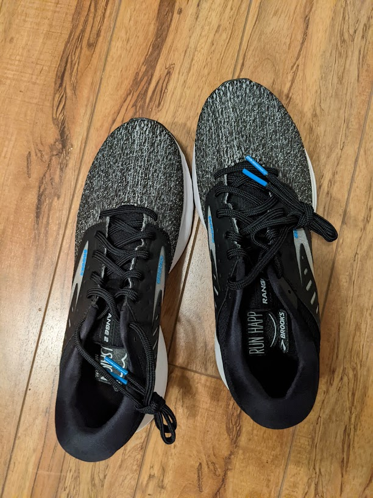
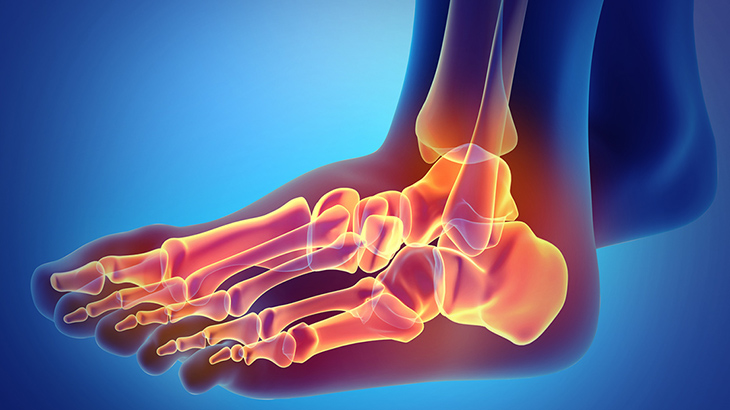
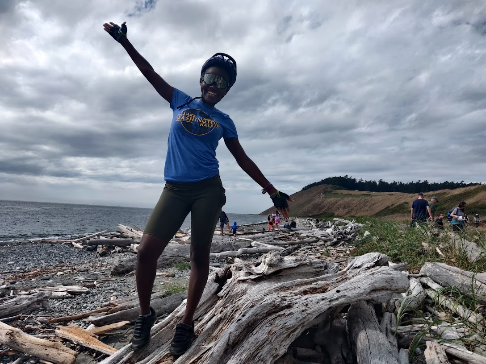

Most days that start with a run are good days. A 10 mile run gives just me enough endorphins to get me through the day and just enough fatigue to calm any anxiety, the world feels light and everything makes sense. Irrespective of how unpleasant the runs feels, I’m generally a pleasant person to be around afterwards. For the past few years I’ve trusted myself to be pleasant, not so much lately. These days most mornings start with a 3 step diagnosis:can I get up? can I walk? can I get into my running shoes? Some days I have virtually no pain and crush my run, some days I slog through the pain, some days I postpone or skip it all together. Sadly, this will be my reality for the foreseeable future.
The signs have always been there and like every other stubborn endurance athlete; I ignored them. I assumed the awkward fist and inability to twist knobs was due to cold fingers. They never seemed to warm up but I just presumed it happens to everyone. Check up after checkup, anemia kept coming up; I assumed its a small price to pay for being an athletic woman. Excruciating joint, feet and knee pain must have been regular soreness that all long distance runners experience and power through. It was all normal until it wasn’t, that happened when the ratio of pain to fun grew unbearably high. Dozens of blood draws and PT visits later, the culprit was found with a fitting commentary from my doctor; “You always seem to suprise me!”.

Rheumatoid Arthritis (RA) is a genetic condition in which the over-eager immnune system attacks joints and causes inflammation. In every day life that means joint pain, extra long morning stiffness and extra saucy inflammation in an unpredictable pattern. To date, there is no cure, just medications to manage symptoms and prevent it from getting worse. It ussually develops in middle age but thanks to my extreme shenanigans like ultrarunning, it has made an early appearance. I’m a relatively young ultrarunner, a species rheumatologists’ rarely see. The typical recommendation of exercise more doesn’t exactly apply to me, due to variablity and unpredictability of RA and obviously natural selection, there isn’t a lot of runners; let alone ultra runners who share the same experience. As of now, I’m on a lonely journey of learning, experimenting and adjusting. This is the beginning of the rest of my life.
Like all incurable things, it sucks to be here. Its a lot to process especially as I was settling into my ultra rhythm. I’m not happy about having to change routine and systems that have carried me through the worst crisis. I’m mourning the control I had over training and the determinism with which I signed up for races. I’m definitetly not ecstatic about comprising the immunity I could always count on to fight even the most obvious COVID exposures. I’m sad that life happens even if you do everything right. It will take a while to accept uncertainity around the one sport I’ve invested so much of myself in. Yes, I’m sad but grateful that lifestyle changes and some pain is all I have to endure. It could definitely be worse. I’m grateful because now I know my ceiling and can say withh some certaininty that I’m doing my best.
I love running for so many reasons, I love running ultras they are an opportunity to devote myself wholeheartedly into what I love. RA doesn’t care and I have to accept that. I’m adjusting; that may mean little to no ultras in my future, that’s okay; I’ve had a good run(pun intended). It doesn’t change the fact that I like doing hard things; I’ll figure out other ways to challenge myself, be it speed work or a new sport altogether. Either way I’ll keep doing my best.

PS: If you want to help, consider donating to arthritis.org to help advance the research.